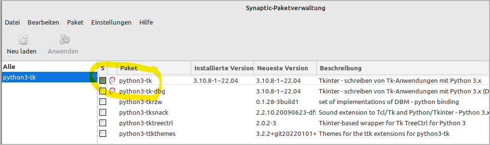
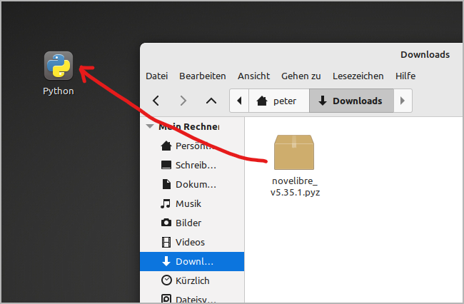
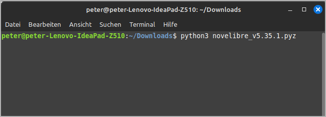
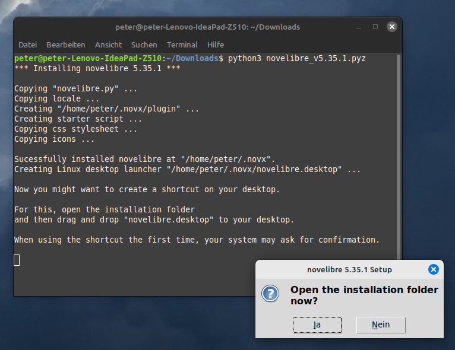
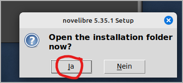
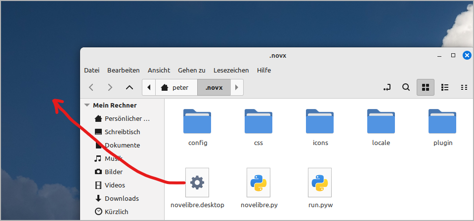
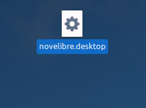
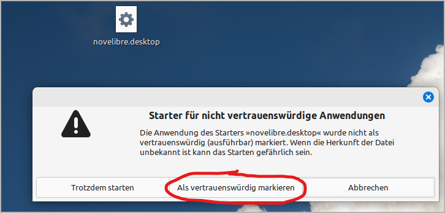
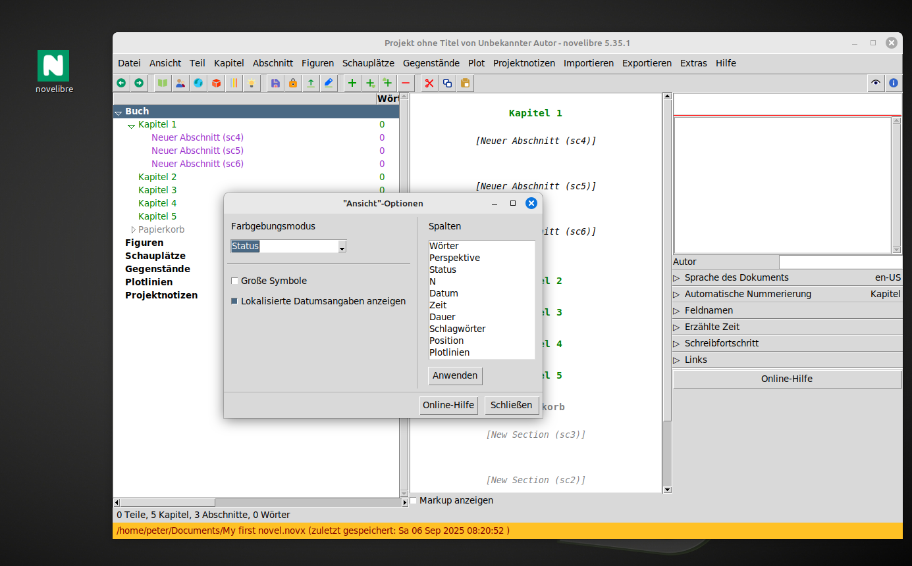
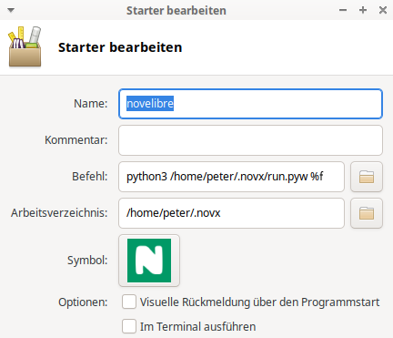

Installation unter Linux
Wichtig
novelibre erhalten Sie als Quellcode in der Programmiersprache Python. Die meisten Linux-Distributionen haben Python bereits installiert, das zur Programmausführung benötigt wird. Stellen Sie jedoch sicher, dass Sie Python in der Version 3.7 oder höher haben. Ist das nicht der Fall, wäre das ein Anlass, Ihre Distribution zu aktualisieren.
Bevor Sie novelibre unter Linux installieren können, müssen Sie sicherstellen, dass die auf der Projekt-Homepage genannten Voraussetzungen erfüllt sind. Insbesondere muss auf Ihrem System die Unterstützung für tkinter installiert sein. Für Ubuntu, Mint und OpenSuse heißt das Paket z.B. python3-tk, für Fedora sollte es python3-tkinter sein.
Starten Sie einfach Ihre Paketverwaltung und suchen Sie nach dem entsprechenden Paket. Hier ist ein Beispiel für Linux Mint:
Lassen Sie dieses Paket, falls nötig, installieren, bevor Sie mit der Installation von novelibre beginnen.
Die eigentliche Installation von novelibre ist einfach und unkompliziert. Dabei legt das Installationsprogramm automatisch ein Installationsverzeichnis an, kopiert alles Nötige hinein, und erzeugt eine für den jeweiligen Rechner angepasste Startdatei namens run.pyw, die man aufrufen muss, um novelibre auszuführen.
Die notwendige Handarbeit besteht darin, diese Startdatei mit dem Desktop zu verknüpfen.
Das Programm installieren
- Schritt 1
Ziehen Sie entweder entweder die heruntergeladene Datei novelibre_vx.x.x.pyz auf den Python-Programmstarter,
oder öffnen Sie eine Konsole im Download-Verzeichnis und führen Sie
python3 novelibre_vx.x.x.pyzaus.
„x.x.x“ ist dabei die Versionsnummer.
In beiden Fällen sollte eine Erfolgsmeldung erscheinen.
Hinweis
Falls Sie keinen Python-Programmstarter eingerichtet haben, können Sie den von mir auf der novelibre-Homepage bereitgestellten herunterladen. Platzieren Sie ihn entweder auf Ihrem Linux-Desktop oder im Download-Verzeichnis. Das lohnt sich im Hinblick auf die Installation von Plugins und Updates.
novelibre auf den Desktop bringen
- Schritt 2
Öffnen Sie das Installationsverzeichnis.
- Schritt 3
Ziehen Sie novelibre.desktop mit der Maus auf den Desktop.
Das erzeugt einen Programmstarter, um novelibre vom Desktop aufzurufen.
- Schritt 4
Beim ersten Anklicken (oder Doppelklicken) könnte eine Warnmeldung erscheinen, um zu verhindern, dass Sie versehentlich eine ausführbare Datei installieren.
Wenn Sie den Programmstarter als vertrauenswürdig markieren, verändert sich das Symbol unter Linux Mint zum novelibre-Programmlogo, und Sie können die Applikation durch Anklicken starten.
Nun können Sie .novx-Dateien auch auf diese Verknüpfung ziehen.
Hinweis
Falls die Schritte 2 bis 4 auf Ihrem Linux-Desktop nicht funktionieren, müssen Sie den Programmstarter selbst einrichten. Es geht darum, python3 mit /home/Ihr-Benutzername/.novx/run.pyw und einer optional angegebenen Datei als Parameter zu starten. Sie erhalten ein Programmsymbol auf Ihrem Desktop, das Sie anklicken können, und auf das Sie Ihre .novx-Projektdatei zum Öffnen ziehen können.
Mit dem XFCE-Desktop, zum Beispiel, lautet mein Befehl im Starter:
python3 /home/peter/.novx/run.pyw %f

Vielleicht müssen Sie die novelibre-Icons in ein spezielles Bilderverzeichnis kopieren, wo der Programmstarter die Programmsysmbole sucht. Schauen Sie im Zweifelsfall in Ihre Desktop-Dokumentation.
Wenn Sie erfolgreich sind, können Sie Ihre Erfahrungen gern im novelibre-Diskussionsforum teilen.
- Schritt 5
Es ist eine gute Idee, die novx-Erweiterung in den mimetypes als text/xml zu registrieren, dann kann Ihr Webbrowser sie mit Hilfe des novx.css-Stylesheets darstellen.
Das Programm oder ein Plugin aktualisieren
Führen Sie einfach den Schritt 1 wie oben beschrieben aus. Sollten weitere Handlungen nötig sein, erhalten Sie eine Meldung vom Setup-Skript.